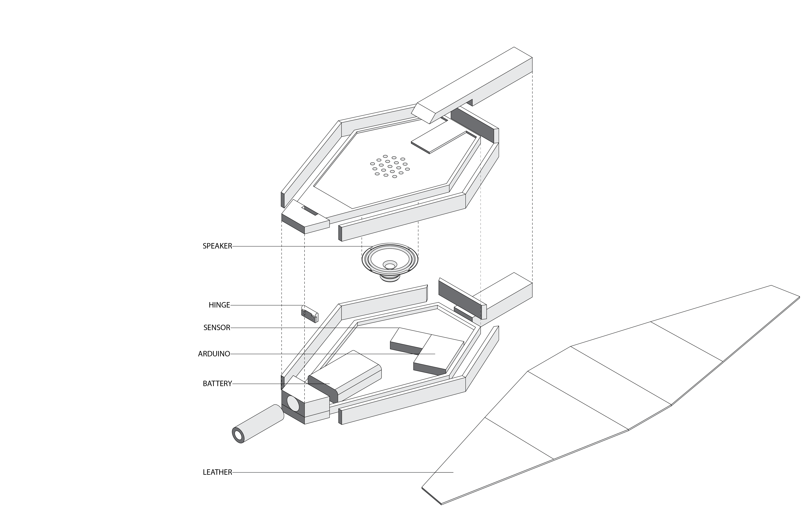

Kitchen Bellow
Compelete Date: 2019/05
Brief
Prior to the invention of gas and electric cooking, fire was used to cook and prepare food. Using Western and Eastern formal bellow archetypes “Kitchen Bellows” considers age old ways of stoking kitchen fires through both form and sound. Employing Arduino technology, this project foregrounds the sound of fire–an obsolete noise in the contemporary kitchen.
Bellows were widely used in ancient time in western culture. No matter it is in the kitchen or metalsmith working place. people always need these kinds of tools to make fire burning better. By applying Arduino technology inside. I try to recover the memory of ancient kitchen sounds of firing. Look at these holes on the top. That’s an actual speaker...
Hand pushing air blower is eastern style bellow which is used in the kitchen for a better firing. The air coming from the side hole which is connected to the fireplace. I applied the same distance sensor into this object so that the audience can hear the firing sound by easily push or pull the handle in the front.
This bellow uses a typical Chinese style wood structure. There is tunnel inside and a wood leaf is using for changing the direction of the wind which means no matter you push or pull the handle, the air always coming out. By using the same sensor of the other bellow, the sound of firing will increase and decrease according to the handle’s position.
By using an ultrasonic distance sensor, Arduino can detect the distance between two paddles. I CNC the top and bottom part with maple, and cut a black leather then clamp it with flat wood strips in order to create a black contour detail. I finished all metal components with black powder coating and all the wooden parts with mate water-based finishing.
Prcocess